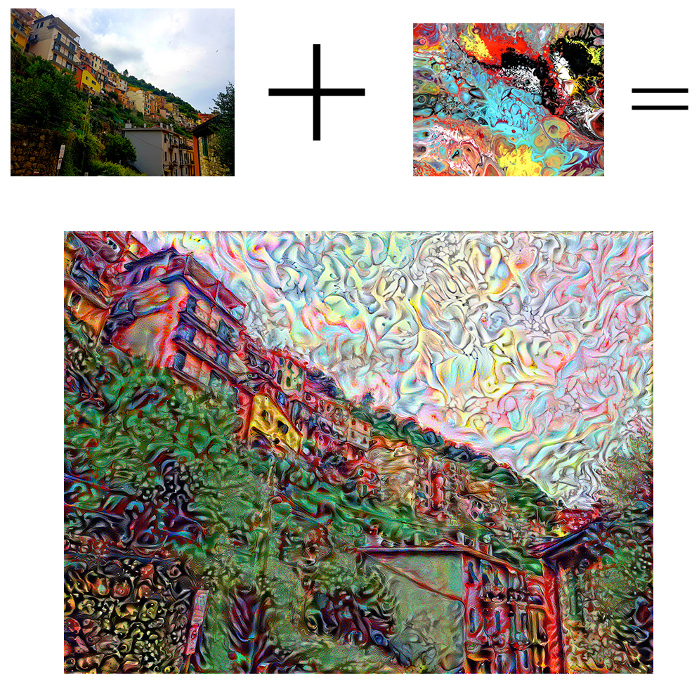
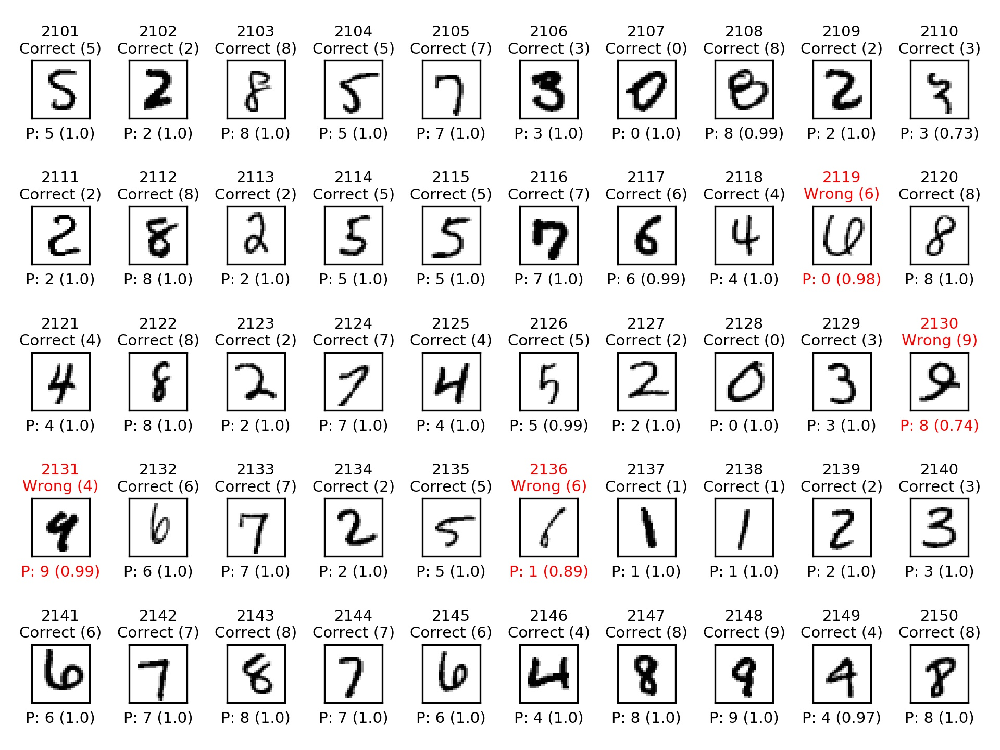
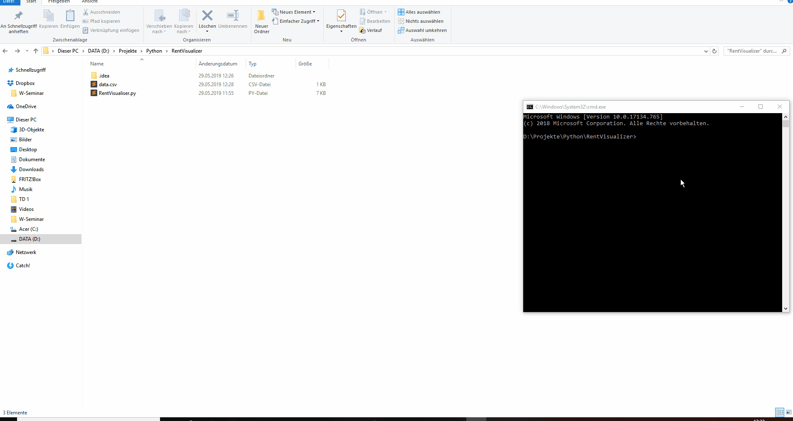
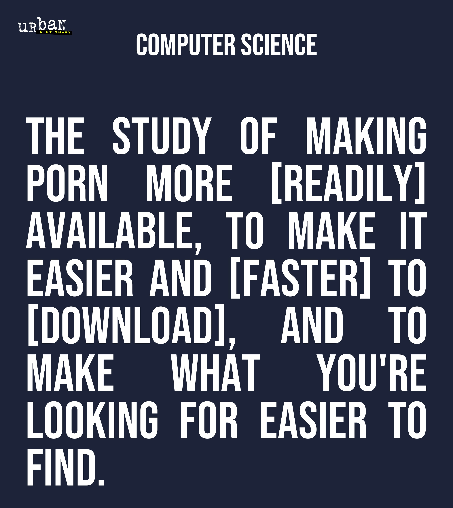
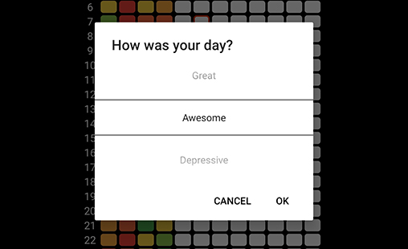
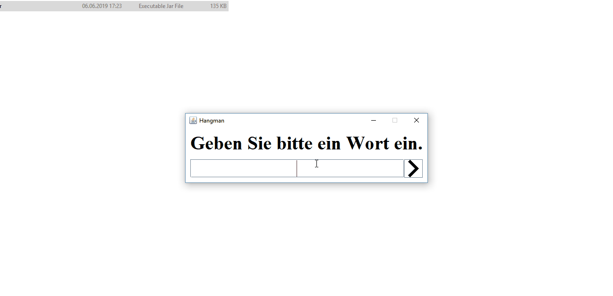

Dieses Skript wurde von diesem Tutorial inspiriert.
Es verfügt über command line arguments und ermöglicht das Speichern von dem neu generierten Foto (das hat für mich in den Tutorial nicht funktioniert).
Dieses Experiment hat mich beim Verstehen von neuronalen Netzwerken geholfen, da dieses etwas anderes war als Klassifizierung.

Nachdem ich mein erstes MNIST neuronales Netzwerk gebaut habe (99.2 % accuracy), wollte ich wissen, was dieses falsch eingestuft hat.
Dieses Skript macht ein Video, das die falsch eingestuften Ziffern im Slow Motion darstellt. Das Video zeigt auch was korrekt oder falsch ist und was das neuronale Netzwerk erratet hat und wie sicher es war im Gegensatz zu der Wirklichkeit.
(P steht for Predicted - Erraten)

Dieses python Skript kann ein interaktives matplotlib Plot produzieren, womit man Mieten in eine Stadt anschauen kann.
Die Mieten werden als Punkte dargestellt und variieren die Große und Farbe basierend auf den durchschnittlichen Preis und Fläche von dem angegebenen Daten.

Ein python Skript das ein Poster mit dem Lieblingswort von www.urbandictionary.com mit der Topdefinition macht.
Dieses python Skript kann einen Photomosaic machen, indem es das angegebene Bild in slices teilt, die ersetzt werden durch die angegebenen Bilder mithilfe von euklidischer Mathematik oder von der CIELAB Farbraum.

Eine einfache android mood tracking App.
Man kann zwischen 10 Stimmungen auswählen und das ganze Jahr als ein JPEG exportieren lassen.

Ein Java Spiel, das ich für meine Mutter gemacht habe, die in einem Altenheim arbeitet.
Diese Hangmanapp soll die Menschen kognitiv erregen und zum Mitmachen motivieren.
Ein neues Projekt wird hier sein